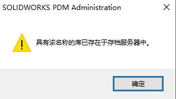
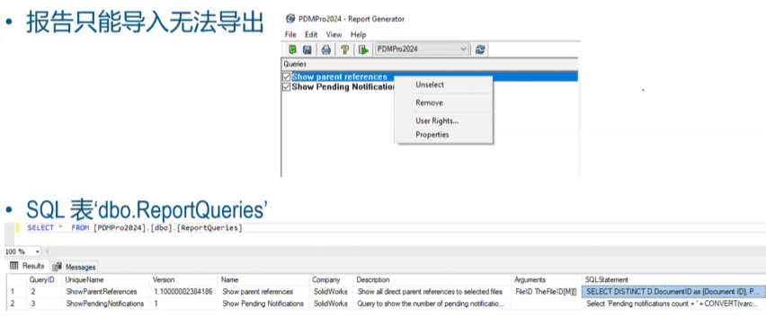
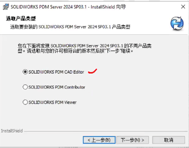

PDM-Q&A
客户端
材料明细表
装配体的材料明细表没有显示零部件明细内容
方法：
重新生成本地视图后恢复正常，这个似乎和电脑用户数据内容（C:\Users\Administrator\AppData）有关系
库已存在
具有该名称的库已存在于存档服务器中

路径显示问题
Win11 PDM路径失效问题

A：是特定版本和Win11的兼容问题
Windows 11 在2023年9月WIN更新 KB5030509后出现。
2024 SP1已修复，2024 SP0/2023 SP5/2022SP5 的补丁参考 QA00000308431
日志错误
1
Msg=[Microsoft][ODBC SQL Server Driver][SQL Server] DELETE语句与REFERENCE约束”FK_GroupProjectNotification_Notifications”冲突。冲突发生在数据库“vaultdb”，表“dbo”。“GroupProjectNotification”，列“NotificationID”。
其他
CRP文件丢失怎么办?
PDM报告原CRP文件丢失怎么办?

PDM许可类型不对
许可获取失败、许可类型不匹配需更换许可类型。许可类型在安装PDM客户端软件时候指定

已经安装完成后需要更换许可类型：PDM 管理【工具>帮助>关于SOLIDWORKS PDM管理>客户端类型】下拉框选择。重启电脑，重启后才会生效为新的许可类型
读不到【更新】
BR10000410974检入失败
Check in of large drawing with many references can cause “an unspecified error occurred” with log showing a query resource error from SPU_UnlockFilesInBatch 2025 regression
Seen with SOLIDWORKS PDM 2025 SP4 and SP4, Windows 2022, SQL 2022 CU7
多选文件检入时，因查询错误而失败。客户端日志显示有三个错误依次出现：
--
Description: Exec SPU_UnlockFilesInBatch
Module: Explorer.EXE
Function: SpUnlock::mhUnlockBatch
Error code: E_UNEXPECTED
Error code general description: An unspecified error occurred.
--
Description: Caught error 1
Module: Explorer.EXE
Function: SpUnlock::mhUnlock
Error code: E_EDM_DATABASE_ACCESS
Error code general description: Could not access the item in the database.
--
Description:
Error running query in SpDbOdbc
State=37000
Msg=[Microsoft][ODBC Driver 17 for SQL Server][SQL Server]The query processor ran out of internal resources and could not produce a query plan. This is a rare event and only expected for extremely complex queries or queries that reference a very large number of tables or partitions. Please simplify the query. If you believe you have received this message in error, contact Customer Support Services for more information.
========= LAST COMMAND ========
…
Begin Transaction
Exec SPU_UnlockFilesInBatch 1
Module: Explorer.EXE
Function: hGetErrCode
Error code: E_EDM_DATABASE_ACCESS
Error code general description: Could not access the item in the database.
-————–
Workaround:
The following registry key avoids the check in error.
在检入失败的客户端：
关闭SOLIDWORKS，从通知托盘图标退出SOLIDWORKS PDM。添加注册表值：
1 | 计算机\HKEY_CURRENT_USER\Software\SolidWorks\Applications\PDMWorks Enterprise\FileFmtMgr |
密钥：ParallelCheckInUpload
类型：DWORD
值：0